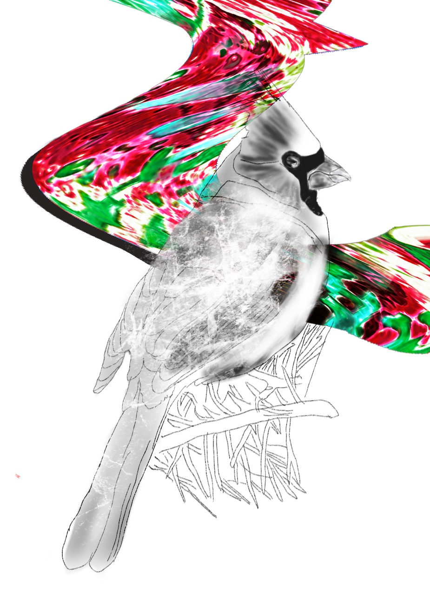

残り4ページ
ベイビー、目を閉じて
Evan Butler 著
第2巻 · 丹碧
© 2026 Evan Butler
2026年11月刊行
2026年11月改訂
2 / 6
残り3ページ
電子レンジがピッと鳴る。
カップを縁でつまんで取り出す。蒸気が、まず目に入る。それから、引き出すときにしぶきが手に飛ぶ。体が、痛みでびくつく。
ERはまたいっぱいだ。廊下までベッドが並んでいる。怒鳴っている男がいる。
「お姉さん、3時間も待ってるのにベッドがないんだ。緊急だってわかんねえのかよ」
男のハローは緑、まるでオーロラみたいだ。
隅に、静かな中年の男が座っている。シアンのハロー。
こぼさないように、ゆっくり運ぶ。
安定。それはそこに、じっとある。彼が起き上がろうとする間も。彼の手は少し震えている。カップをトレイに置いて、もっと近くに押す。
少し開けて、蒸気を出す。それから、右手にプラスチックのフォークを、左にナプキンを渡す。
彼は、ありがとうと言うみたいにうなずく。何口か食べてから、持っているジュースを一口飲む。果肉入りのオレンジジュース。
数分、座る。目が、焼けるように痛い。バレーボールみたいに丸くて、赤い。
一秒、目を閉じる。痛みが、波みたいにぶり返す。油断した瞬間に襲ってくるのを待っているみたいに。
中年の男が、私の髪がきれいだと言う。孫娘を思い出す、と。
うなずいて、ありがとうと言う。
彼がゆっくり食べるのを見ている。かすかな笑顔が見える。
3 / 6
残り2ページ
玄関の階段を上がって、フェンスを開ける。通り過ぎるとき、フェンスにシャツが少し引っかかる。
鍵束の中から、玄関の鍵を探す。たんぽぽ色のドアノブをつかんで、左にひねりながら、鍵を右に回す。
数歩、中に入る。片膝をついて、結び目ができないように、慎重に靴ひもをほどく。ゆっくり靴を脱いで、バーガンディーのスリッパに足を入れる。
リビングで、父がイライラしているみたいだ。顔は、紙くずを丸めたみたいにしわくちゃ。汗の粒が、顔を伝っている。
何かを探しているみたいだ。
小さな声でただいまと言う。仕事はどうだった、と聞かれる。何もなかった、と答える。本当は、疲れたと言いたい。
深呼吸してから、二つ目の質問をする。それから、腰に手を当てる。「家の中に、お金が落ちてないか？」
「ない」と私は言う。
「時間があるときに、家の中を探すのを手伝ってくれないか」と彼は言う。
ためらいながら、うなずく。
いつもの服に着替える。スクラブを脱いで、バスキアの『Abuelita』の白いTシャツを着る。壮大な人物。でも、下は脆い。ジョギングに使っていたグレーのスウェットパンツをはく。
部屋を出て、父のお金を探すのを手伝い始める。
地下室から始めることにする。木の手すりをつかんで、ゆっくり階段を下りる。階段のきしみは、眠っている熊を起こしそうだ。地下室の薄暗い中へ下りていくと、においがする。酸っぱい。強い。道で嗅いだら、顔をそむけるようなにおい。
古い机のそばに、布の袋が置いてある。その机は、何年も使われていない。少しだけ覗いて、中を見る。
缶とガラス瓶、たくさん。アルコール度数40%、スミノフ・ウォッカ、と書いてある。袋のそばには、お金がばらまかれている。
ためらう。でも、父の慌ただしい足音が階段を下りてくるのを聞いて、すぐに散らばったお金を拾う。
お金を、スウェットパンツのポケットに、雑に隠す。心臓の、かすかな鼓動が聞こえ始める。手の汗で、触るものが何でも滑り落ちそうだ。
父のイライラした顔が、疑いの顔に変わり始める。
「さっき、何を拾ったんだ」と彼は言う。
「そこらへんのゴミを片付けてただけ」
彼は口を開けて、「何」という言葉を強調するみたいに、唇をすぼめる。
「俺をバカだと思ってんのか。お前が金を拾うのを見たんだぞ」
私の声が割れ始めて、高くなる。
「本当のことを言ってるの」
「俺をバカだと思ってんのか！」と彼は叫ぶ。
「俺の金を隠す権利なんて、お前にはねえんだよ。今すぐ俺の金を返しやがれ！」
彼の声が、家中に響く。実際、近所中が彼の怒りを感じているはずだ。
ポケットに手を入れて、汗ばんだ手で、くしゃくしゃのお金をつかむ。彼の目を、まっすぐ見ないようにする。
お金を渡そうと近づくと、彼は私の腕をつかむ。泣きたくなるくらい、強く握る。涙をこらえながら、彼はさっきの叫び声より低い声で、こう言う。
「もう一度、俺から何か隠したり取ったりしてみろ。お前を終わらせてやる」
その言葉を聞いたあと、私は牛みたいだ。あの言葉を、頭に焼き付けられたみたいに。
4 / 6
残り1ページ
次の日、水曜日、午後11時40分
ERに、30代後半に見える女性が入ってくる。ブルネットの髪。
唇にあざがあって、血がたくさん垂れている。
顔の右側が、コンクリートの壁に叩きつけられたみたいに腫れている。
服は、ところどころ伸びて、よれている。
彼女のハローは、揺れるシアン色をしている。
彼女は私に近づいて、状況を説明する。名前はルイザンヌ。少しの間付き合っていた男に、レイプされたと言う。誘いを断ったあとに。
彼女を静かな部屋に連れて行く。
涙が滝みたいに流れる。体が少し震えている。
ベッドが用意されるのを待つ間、私は彼女をなぐさめる。状況のため、ベッドが必要な人の優先リストに入れられる。
彼女は、STDにかかったかもしれないと、怖がっていると言う。話していた男が、それを広めているという話を聞いたから、気をつけていたのだ。
彼女はゆっくり頭を下げて、片手で顔を覆う。恥ずかしかったみたいに。
言うたびに、少しずつやさしく、同じ言葉を繰り返す。
わかる。
わかる。
わかる。
5 / 6
Fin

6 / 6